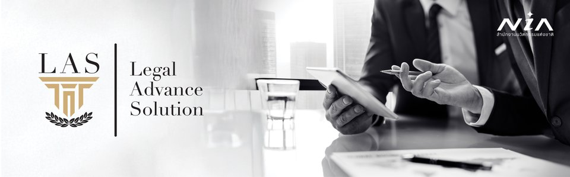
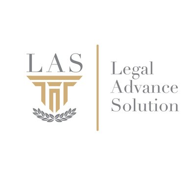

ธันย์ธรณ์เทพ แย้มอุทัย — Thundthornthep Yamoutai
| Thundthornthep Yamoutai | |
| ธันย์ธรณ์เทพ แย้มอุทัย | |
 | |
| ดร.ธันย์ธรณ์เทพ แย้มอุทัย (Dr. Thundthornthep Yamoutai) กรรมการผู้จัดการ LAS | ทนายความธุรกิจ & AI LegalTech Strategist | |
| Based in | Bangkok, Thailand |
|---|---|
| Nationality | Thai |
| Occupation | Business Lawyer & AI LegalTech Strategist Designing Legal Frameworks to Protect, Structure & Scale Businesses — Sustainably |
| Title | Ph.D., Barrister-at-Law |
| Current position | Founder & Managing Director, Legal Advance Solution Co., Ltd. (LAS) |
| Education |
DPA/Ph.D. — Bangkokthonburi Univ. LL.M. (Business Law) — Assumption Univ. LL.B. — Assumption Univ. |
| Credentials |
Thai Barrister-at-Law Notarial Services Attorney WIPO IP Certificate Thammasat Int'l Trade Law Cert. |
| Known for | AI-Powered Legal Research System · MahaNakhon Project · Government legal advisory across multiple ministries · University lecturer (KU, BTU, SSRU) · Published ACI researcher · Extraordinary Parliament Committee |
| Website | laslegal.co.th |
| Knowledge | Legal Knowledge Hub |
ดร.ธันย์ธรณ์เทพ แย้มอุทัย (อ.เต้) เป็นทนายความธุรกิจ นักวิชาการด้านกฎหมาย และผู้บุกเบิก AI Legal Tech ในประเทศไทย เป็นผู้ก่อตั้งและกรรมการผู้จัดการ บริษัท ลีกัล แอดวานซ์ โซลูชั่น จำกัด (LAS) สำนักงานกฎหมายที่ผสมผสานการให้คำปรึกษากฎหมายแบบดั้งเดิมเข้ากับการพัฒนาระบบ AI วิจัยกฎหมาย ซึ่งได้รับทุนสนับสนุนการวิจัยจากสำนักงานนวัตกรรมแห่งชาติ (NIA) ดร.ธันย์ธรณ์เทพ มีประสบการณ์กว่า 20 ปี ในกฎหมายธุรกิจ อสังหาริมทรัพย์ กฎหมายแรงงาน PDPA และที่ปรึกษาภาครัฐ เป็นอาจารย์สอนกฎหมายที่มหาวิทยาลัยเกษตรศาสตร์ มหาวิทยาลัยกรุงเทพธนบุรี และมหาวิทยาลัยราชภัฏสวนสุนันทา มีผลงานตีพิมพ์ในฐานข้อมูล ASEAN Citation Index (ACI) เป็นผู้เชี่ยวชาญด้าน Due Diligence และ Conditions Precedent (CP) ซึ่งเป็นเอกลักษณ์ของ LAS ในการวางระบบตรวจสอบคัดกรองคู่สัญญาและเป้าหมายการลงทุน
Thundthornthep Yamoutai, Ph.D. (Thai: ธันย์ธรณ์เทพ แย้มอุทัย) is a Thai lawyer, legal scholar, and legal technology innovator specializing in real estate development, corporate and commercial law, government regulatory policy, and AI-powered legal research. He is the Founder and Managing Director of Legal Advance Solution Co., Ltd. (LAS), a Bangkok-based law firm that combines traditional legal practice with the development of an AI-driven legal research advisory system for Thai law — a project awarded R&D funding by the National Innovation Agency (NIA).
With over 20 years of combined experience across private-sector practice, in-house counsel, academic lecturing, and government advisory roles, Thundthornthep has handled complex legal matters for leading real estate developers, multinational hotel operators, and publicly listed companies. His advisory approach is rooted in identifying legal risks in advance, designing preventive strategies, and ensuring compliance that supports sustainable business growth.
- Early Life and Education
- Legal Career
- Advisory Philosophy and Practice Areas
- Government and Public Service
- Academic and Teaching Activities
- AI-Powered Legal Research
- Selected Major Projects
- Publications and Legal Writings
- Honours and Awards
- Professional Credentials and Expertise
- Selected News and Media
- Official Channels / ช่องทางอย่างเป็นทางการ
- ความรู้กฎหมาย / Legal Knowledge Hub (11 articles)
Early Life and Education
Thundthornthep Yamoutai is based in Bangkok, Thailand. He completed his secondary education at Assumption College Thonburi, majoring in Mathematics–English.
He holds a Doctor of Public Administration (DPA/Ph.D.) from Bangkokthonburi University, a Master of Laws (LL.M.) in Business Law, and a Bachelor of Laws (LL.B.) from Assumption University in Bangkok.
In addition to his degrees, he has completed several professional certification programmes: a general course on intellectual property from the WIPO Worldwide Academy (United Nations), a certificate in international trade laws from the Faculty of Law at Thammasat University, the Thai Barrister-at-Law qualification, and certification as a Notarial Services Attorney from the Lawyers Council of Thailand.
Legal Career
Early Law Firm Practice
Thundthornthep began his legal career in Thai law firms, working as a junior and later senior lawyer handling corporate law, foreign business licences, and complex company establishment. His work included drafting and negotiating various commercial agreements, providing legal opinions, and advising on investment models and corporate governance for both Thai and foreign clients.
Real Estate and Hospitality
He later moved into in-house roles in the real estate and hospitality sector, taking senior legal positions at:
- Laguna Resorts & Hotels Plc. in Phuket as Senior Lawyer, responsible for luxury residential projects (e.g., Banyan Tree Residences) and resort/hotel operations under condominium structures.
- Pace Development Co., Ltd. and subsequently Pace Development Corporation Public Co., Ltd., where he handled complex legal matters related to the MahaNakhon luxury mixed-use project in Bangkok, including branded residences (The Ritz-Carlton Residences), a luxury hotel, retail centre, and plaza.
At Pace, he worked closely with financial advisors and auditors to prepare the company for listing, supported board and executive committee meetings, and developed legal compliance frameworks.
Leadership Roles in Property Companies
He served as Director of the Legal Department at Tri Property Co., Ltd. In this role he:
- Designed the legal and compliance framework to support the group's plan to become a listed company.
- Managed legal documentation for seven condominium projects in Bangkok and Phuket and a beachfront hotel in Patong.
- Oversaw all property registrations at the Land Department and ensured legal processes followed project timelines.
He later became a Partner (Corporate and Real Estate) at Law Republic Co., Ltd., advising on corporate and property transactions.
Legal Advance Solution (LAS)
Thundthornthep founded Legal Advance Solution Co., Ltd. and became its Managing Director. The firm's name abbreviates to "LAS" — a homophone of "last," signifying their commitment to being the final, trusted answer in legal advisory.
At LAS, the team focuses on real estate development, corporate and commercial law, personal data protection, SME transformation, government regulatory policy, and — distinctively — the development of an AI-powered legal research platform for Thai law.
The firm's concept centres on legal advice grounded in fact and legitimate reference, combined with business perspective and an entrepreneurial mindset. LAS serves as a dedicated legal partner throughout the entire project lifecycle — from feasibility study to completion and beyond.
Signature Methodology: Due Diligence & Conditions Precedent (CP)
A defining hallmark of Dr. Thundthornthep's legal practice — and the LAS advisory approach — is the systematic design of Due Diligence and Conditions Precedent (CP) mechanisms that serve as powerful screening and compliance frameworks in complex business transactions.
This methodology reflects Dr. Thundthornthep's deep expertise in designing legal frameworks that protect, structure, and scale businesses sustainably. The LAS Due Diligence & CP approach includes:
- Precision Screening of Counterparties & Investment Targets — Designing multi-layered due diligence checklists that systematically evaluate legal, financial, and operational risks before any binding commitment, ensuring that only qualified and verified parties proceed to transaction.
- Complex but Practicable Condition Systems — Crafting intricate CP structures that are sophisticated enough to protect the client's interests, yet realistic and achievable for counterparties to fulfil within agreed timelines. This balance between complexity and practicability is a key differentiator of LAS advisory.
- Monitoring & Enforcement Mechanisms — Building ongoing compliance tracking systems within contractual frameworks, ensuring that counterparties must continuously meet specified conditions, with clear escalation paths and remedies for non-compliance.
- Business-Aligned Risk Mitigation — Integrating CP and due diligence requirements seamlessly into the business transaction structure, so that legal protections enhance rather than impede commercial objectives.
This signature approach has been refined across 20+ years of practice in landmark projects — from the MahaNakhon development and Ritz-Carlton branded residences to government policy advisory and NIA-funded AI legal technology — and is now further enhanced through the LAS AI-Powered Legal Research Advisory System funded by NIA.
Advisory Philosophy and Practice Areas
Thundthornthep's advisory approach is rooted in real-world experience across corporate law at international firms, leading in-house legal departments for publicly listed companies, and advising government ministries. For every engagement, his primary objectives are to:
- Identify legal limitations, conditions, and regulatory constraints relevant to the client's business operations;
- Assess and communicate risks to executive management in advance, enabling informed decision-making;
- Design preventive strategies and systematic risk mitigation plans to safeguard the client's interests; and
- Ensure legal compliance across all operational areas, supporting sustainable and long-term business growth.
LAS offers advisory services across the following practice areas:
Government and Public Service
Thundthornthep has an extensive record of service as a legal advisor and committee member to Thai government ministries, state enterprises, and public organisations. His roles span multiple sectors of government:
| Position | Organisation | Status |
|---|---|---|
| Legal Advisor to the Director-General | Rice Department, Ministry of Agriculture and Cooperatives | Active |
| Subcommittee on Law and Privileges | Industrial Estate Authority of Thailand (IEAT) | Active |
| Working Group on Legal Implementation | Industrial Estate Authority of Thailand (IEAT) | Active |
| Advisor on Organisation Management and Innovation Structure | Thailand Institute of Scientific and Technological Research (TISTR) | Active |
| Subcommittee on Legal Affairs | Thailand Institute of Scientific and Technological Research (TISTR) | Active |
| Fund Management Committee | Thailand Institute of Scientific and Technological Research (TISTR) | Active |
| Committee on Law Reform and Drafting Energy Laws | Ministry of Energy | Completed |
| Committee to Drive EV Industry Promotion Policy | Ministry of Industry | Completed |
| Working Group of the Minister | Ministry of Labour | Completed |
| Advisor to the Assistant Minister | Ministry of Labour | Completed |
| Working Group of the Minister | Ministry of Higher Education, Science, Research and Innovation (MHESI) | Completed |
| Advisor to the Secretary of the Minister | Ministry of Higher Education, Science, Research and Innovation (MHESI) | Completed |
| Extraordinary Parliament Committee — Draft Legislation | House of Representatives (กรรมาธิการวิสามัญ พิจารณาร่างกฎหมาย สภาผู้แทนราษฎร) | Completed |
| Executive Committee Member & Registrar of Party Membership | Political Party Administration (กรรมการบริหารพรรคการเมือง / นายทะเบียนสมาชิก) | Completed |
| Legal Counsel to the Governor | Thailand Institute of Scientific and Technological Research (TISTR) | Completed |
| Extraordinary Parliament Committee — Draft Research and Innovation Utilisation Promotion Act | Thai Parliament | Completed |
| Subcommittee on Risk Management and Internal Control | National Innovation Agency (NIA) | Completed |
| Subcommittee on Legal Affairs | SME Development Bank of Thailand | Completed |
| Advisor to Extraordinary Parliament Committee — Draft Higher Education Act | Thai Parliament | Completed |
| Expert Consultant to Member of Parliament | House of Representatives | Completed |
| Chairman of Legal Committee for mSMEs | Thai SME Federation | Completed |
Academic and Teaching Activities
Thundthornthep is active in legal education as a lecturer and speaker across multiple universities in Thailand:
University Appointments
| Role | Institution | Faculty / Programme |
|---|---|---|
| Special Lecturer — Law and Tax for Business (01140221) | Kasetsart University (KU) | Faculty of Business Administration, Department of Marketing |
| Faculty Lecturer — Business Law | Bangkokthonburi University (BTU) | Faculty of Law |
| Guest Lecturer — Business Law | Suan Sunandha Rajabhat University | College of Innovation Management, Business Information Systems |
Teaching Subjects and Course Topics
His teaching is distinguished by extensive use of real-world documents and case studies drawn from his own practice — including contracts from the MahaNakhon project, joint venture agreements, condominium sale-purchase agreements, employment contracts, powers of attorney, and corporate meeting documents — giving students direct exposure to the standards and complexity of professional legal practice.
AI-Powered Legal Research
Background and NIA Funding
As part of his work at LAS, Thundthornthep leads the development of the LAS AI-Powered Legal Research Advisory system — a proprietary platform designed to transform legal research and advisory services in Thailand. The system has been awarded research and development funding by the National Innovation Agency (NIA), one of Thailand's key public agencies responsible for fostering innovation.
The initiative was born from Thundthornthep's recognition that traditional legal research in Thailand remains time-consuming, fragmented across multiple government sources, and often inconsistent in depth and citation quality. By combining over 20 years of legal domain expertise with cutting-edge AI technology, LAS aims to set a new standard for legal service delivery in Thailand.
System Capabilities
The LAS AI-Powered Legal Research Advisory system represents a significant advancement in legal technology for Thai law. Its key capabilities include:
- Comprehensive Legal Knowledge Base — A systematically curated database of Thai statutory law, Supreme Court decisions, and regulatory guidance sourced exclusively from authoritative government legal agencies.
- AI Fine-Tuning & Custom Training — Purpose-built AI models specifically trained for Thai legal analysis, replicating the reasoning process and advisory methodology of experienced legal professionals to deliver systematic, accurate, and well-cited legal research.
- Structured Legal Analysis — The system generates well-structured, professionally cited legal opinions that follow the methodical approach of seasoned practitioners, ensuring consistency and reliability.
- Enhanced Client Value — The technology enables LAS to deliver faster turnaround, deeper legal analysis, and more comprehensive risk assessment while maintaining rigorous professional standards.
Impact and Vision
This initiative positions Thundthornthep and LAS at the intersection of law, public policy, and legal technology in Thailand. The system is designed to serve not only LAS's direct clients but also partner institutions seeking to improve the speed, depth, and consistency of their legal research capabilities.
The broader vision is to democratise access to high-quality legal analysis in Thailand — enabling SMEs, startups, and public organisations to make better-informed legal decisions through AI-augmented advisory services. The NIA funding validates this approach as a nationally significant innovation in the Thai legal services sector.

Dr. Thundthornthep Yamoutai, LAS, Legal Advance Solution Co., Ltd.
ได้รับทุนสนับสนุนการวิจัย AI Legal Research โดย
สำนักงานนวัตกรรมแห่งชาติ (องค์การมหาชน) — National Innovation Agency (NIA)
Selected Major Projects
Real Estate and Hospitality
- MahaNakhon Luxury Mixed-Use Project, Bangkok — Handled complex legal matters for the MahaNakhon development, including The Ritz-Carlton Residences, a luxury boutique hotel, high-end retail centre, and public plaza, and supported the company's legal preparation for stock-exchange listing.
- Banyan Tree Residences & Luxury Residential Projects — Managed legal work for multiple luxury residential developments, including Banyan Tree Residences Bangkok and Banyan Tree Residences Phuket, covering project structuring, sales documentation, and regulatory compliance.
- Laguna Resorts & Hotels Portfolio, Phuket — Responsible for legal matters of several luxury resorts and hotels such as Banyan Tree Phuket, Outrigger Laguna Phuket, and Best Western Allamanda Laguna Phuket, including hotel licensing and operations under condominium structures.
- Condominium and Hotel Projects for Tri Property Group — Oversaw legal affairs for seven condominium projects in Bangkok and Phuket and a beachfront hotel in Patong, covering land acquisition, condominium registration, and property transfers at the Land Department.
Corporate and Capital Market Preparation
- Listing Preparation for Pace Development Corporation Public Co., Ltd. — Collaborated with financial advisors and auditors to design legal compliance systems, resolve legal risks, and prepare corporate documentation and board/committee processes for listing on the Thai stock exchange.
- Listing Preparation Framework for Tri Property Group — Developed the legal and compliance framework and documentation structure to support the group's readiness for future listing as a public company.
Government Policy and Law Reform
- Committee on Law Reform and Drafting Energy Laws — Served on the Ministry of Energy's committee responsible for drafting and reforming energy-related legislation, contributing legal and policy input on national energy frameworks.
- Committee to Drive EV Industry Promotion Policy — Participated in the Ministry of Industry's committee to promote Thailand's electric vehicle (EV) industry, helping shape legal and regulatory mechanisms for EV ecosystem development.
- Extraordinary Parliament Committee on Research and Innovation Law — Contributed as committee member for the Draft Research and Innovation Utilisation Promotion Act, aligning legal provisions with Thailand's research and innovation policy goals.
- Extraordinary Parliament Committee on Higher Education Act — Advised on higher education legislation to support governance, coordination, and problem-solving in Thai higher education institutions.
- The Drafting of National Education Act — Served as legal expert for members of parliament in drafting the National Education Act.
SME and mSME Development
- Legal Committee for mSMEs, Thai SME Federation — Acted as Chairman / Chief Legal Advisor, providing strategic legal guidance for micro, small, and medium enterprises and contributing to SME policy advocacy.
- Legal Subcommittee, SME Development Bank of Thailand — Advised on legal and regulatory matters affecting SME financing, risk management, and product structuring in a state-owned development bank.
Science, Technology, and Innovation Governance
- Thailand Institute of Scientific and Technological Research (TISTR) — Served as Advisor on organisation management and innovation structure, Legal Subcommittee member, and Fund Management Committee member, integrating law, governance, and R&D policy.
- National Innovation Agency (NIA) — Joined the Subcommittee on Risk Management and Internal Control and later received NIA R&D funding for the LAS AI-Powered Legal Research system, bridging innovation policy and legal technology deployment.
- TKC–PTJ Brother Strategic Partnership — Participated in the signing ceremony for a business cooperation MOU to expand digital, AI, legal consulting, and cybersecurity services.
Publications and Legal Writings
Thundthornthep has authored and published multiple legal articles and knowledge resources through LAS, covering areas of Thai business law, real estate, labour, corporate governance, and data protection:
Peer-Reviewed Journal Articles (ASEAN Citation Index)
Academic Thesis
Academic Presentations
Conference Papers and Legal Knowledge Articles
Honours and Awards
- Research Award — Received recognition at the 10th National and 5th International Academic Conference for the research paper on "Laws Related to the Development of Mixed-Use Real Estate Projects in Thailand."
- NIA R&D Funding Award — Awarded research and development funding from the National Innovation Agency (NIA) for the LAS AI-Powered Legal Research Advisory system, validating the project as a nationally significant innovation in legal technology.
- Published Legal Author — Published the article "Legal Guidelines for Condominium Earthquake Damage Actions for Co-owners and Juristic Person Committee," a pro bono piece aimed at enhancing public legal awareness following the Bangkok earthquake crisis .
- TISTR Innovation Advisor Appointment — Formally appointed by the Thailand Institute of Scientific and Technological Research as Advisor on Organisation Management and Innovation Structure.
- Government Appointment Credentials — Formally recognised through multiple Royal Thai Government and public-organisation orders and appointments as legal advisor, committee member, and expert across ministries, state enterprises, and national-level commissions.
Professional Credentials and Expertise
Thundthornthep is a Thai Barrister-at-Law and Certified Notarial Services Attorney, licensed by the Lawyers Council of Thailand. He has more than 20 years of combined experience in private sector, in-house, and government advisory roles. His core areas of expertise include:
- Real estate and property development law
- Hotel and branded residence structures
- Mixed-use and landmark development advisory
- Corporate and commercial law
- Investment and joint venture structuring
- Government regulatory and policy advisory
- SME and mSME legal frameworks
- Labour and employment advisory
- Personal Data Protection (PDPA) compliance
- AI-powered legal research and knowledge systems
Selected News and Media
- NIA Partners with LAS for AI Funding Approval — NIA granted R&D funding to LAS for development of the "AI-Powered Legal Research System." [LAS News]
- Legal Advisor Appointment — Rice Department — Dr. Thundthornthep appointed as Legal Advisor to the Director-General of the Rice Department, Ministry of Agriculture and Cooperatives. [LAS News]
- TISTR Appoints Thundthornthep as Innovation Advisor — Thailand Institute of Scientific and Technological Research appointed him as Advisor for organisational management and innovation. [LAS News]
- Rice Department Partners with DIPROM on De-Carbon Rice Policy — Attended strategic meeting between Thailand's Rice Department and Department of Industrial Promotion. [LAS News]
- TKC–PTJ Brother Strategic Partnership MOU — Participated in the signing ceremony for MOU to expand digital, AI, legal consulting, and cybersecurity services. [LAS News]
- LAS Business Law & Tax Lecture at Kasetsart University — Led a business law and tax lecture for marketing students at the Faculty of Business Administration. [LAS News]
- The Drafting of National Education Act — Served as legal expert for members of parliament in the drafting of the National Education Act. [LAS News]
- Honorary Advisor Appointment — A former Deputy Permanent Secretary of the Ministry of Labour accepted the position of honorary advisor to LAS. [LAS News]
- Amazing Muay Thai World Festival — Participated in the historic Thai martial arts showcase at a Roman amphitheatre, celebrating Thai-Italian friendship. [LAS News]
Official Channels / ช่องทางอย่างเป็นทางการ
The following are the only official and verified channels of Dr. Thundthornthep Yamoutai and Legal Advance Solution Co., Ltd. (LAS). Please verify any communication claiming to be from Dr. Thundthornthep or LAS through these channels.
ช่องทางด้านล่างนี้เป็นช่องทางอย่างเป็นทางการเท่านั้นของ ดร.ธันย์ธรณ์เทพ แย้มอุทัย และ บริษัท ลีกัล แอดวานซ์ โซลูชั่น จำกัด กรุณาตรวจสอบทุกการติดต่อที่อ้างว่ามาจาก ดร.ธันย์ธรณ์เทพ หรือ LAS ผ่านช่องทางเหล่านี้
| Channel | URL / Contact | Status |
|---|---|---|
| LAS Official Website | laslegal.co.th | Official |
| Official Profile | thundthornthep-ai.github.io | Official |
| GitHub | github.com/Thundthornthep-ai | Official |
| info@laslegal.co.th | Official | |
| Office Phone | 02-095-5635 | Official |
| Office Address | Unit 1405, 14th Floor, Abdulrahim Place, 990 Rama IV Road, Bangkok | Official |
Security Notice / ประกาศเตือนภัย
Dr. Thundthornthep Yamoutai and LAS will never:
- Request money transfers via LINE, Facebook DM, or any social media messaging
- Ask for personal banking information through unofficial channels
- Offer legal services through unverified accounts
ดร.ธันย์ธรณ์เทพ และ LAS จะไม่ดำเนินการดังต่อไปนี้:
- ขอให้โอนเงินผ่าน LINE, Facebook DM หรือข้อความบนโซเชียลมีเดีย
- ขอข้อมูลบัญชีธนาคารส่วนตัวผ่านช่องทางที่ไม่เป็นทางการ
- เสนอบริการกฎหมายผ่านบัญชีที่ไม่ได้รับการยืนยัน
If you encounter suspicious accounts impersonating Dr. Thundthornthep or LAS, please report to info@laslegal.co.th
หากพบบัญชีที่น่าสงสัยที่แอบอ้างเป็น ดร.ธันย์ธรณ์เทพ หรือ LAS กรุณาแจ้งที่ info@laslegal.co.th